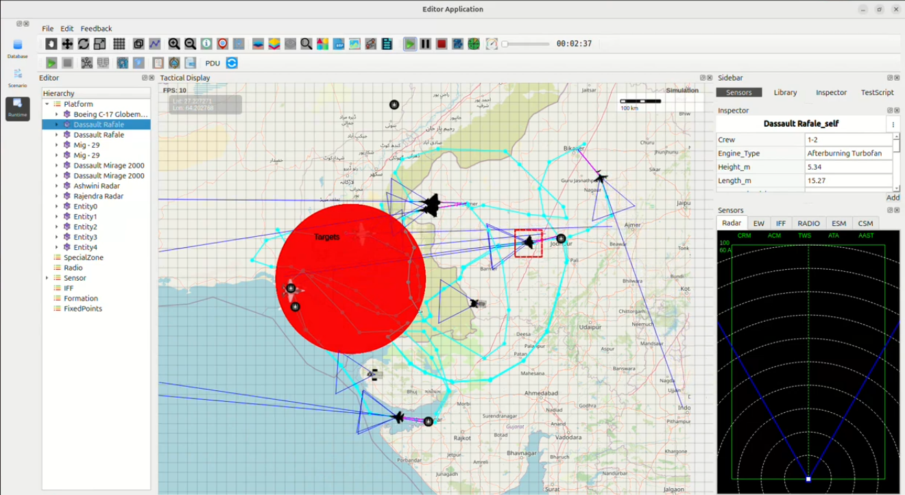

Indian Air Force Cross-Border Strike on Pakistani Airbase – Case Study
This case study analyzes a simulated Indian Air Force (IAF) offensive operation targeting a major Pakistani airbase located near the Sindh–Gujarat border. The strike is executed using Dassault Rafale, Dassault Mirage 2000, and MiG-29 aircraft launched from forward airbases in Gujarat and Rajasthan.
1. Mission Objective
The primary goals of the cross-border strike operation were to:
Enter Pakistani airspace undetected
Neutralize high-value military assets
Destroy grounded aircraft and hangars
Cripple radar and air-defense capability
Demonstrate India’s precision-strike readiness in the western theatre
2. Strike Package Composition
The strike mission was executed through a multi-role aircraft composition:
Dassault Rafale – Deep strike + high-altitude air dominance
Dassault Mirage 2000 – Surgical precision bombing
MiG-29 UPG – Escort and Suppression of Enemy Air Defenses (SEAD)
These aircraft were deployed from:
Jodhpur Airbase
Jaisalmer Airbase
Forward airbases in Gujarat sectors
3. Target & Strike Zone
The large red circular zone represents the Pakistani airbase and associated military infrastructure. Key strike points within this zone include:
Command and control centers
Fuel storage depots
Aircraft hangars and grounded fighters
Radar and surveillance installations
Tactical logistics hubs
4. Tactical Insights from Flight Paths
The colored paths (cyan, purple, blue) visible in the simulation represent:
Low-altitude radar evasion maneuvers
Multi-axis ingress routes overwhelming defensive systems
High-speed penetration loops
Coordinated Mirage-based precision strike runs
5. Mission Phases
Phase 1 – Ingress Fighters approach the border at low altitude, maintaining stealth flight profiles.
Phase 2 – Penetration Rafale and Mirage aircraft enter the strike zone from separate vectors, dividing Pakistani air-defense focus.
Phase 3 – Strike Mirage 2000 deploys precision-guided munitions while Rafale provides top cover and MiG-29 suppresses enemy radar and SAM elements.
Phase 4 – Withdrawal Aircraft exit via secured air corridors; no losses recorded.
6. Mission Outcome
All assigned Pakistani targets were successfully destroyed.
Enemy radar and SAM networks were saturated and degraded.
Zero aircraft losses for the Indian Air Force.
The operation validated India’s capability to conduct deep, accurate cross-border strikes.
Simulation Image
{kind=link}
